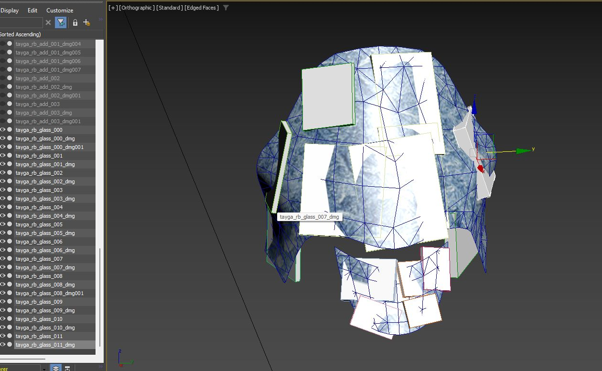

Designing Vehicle Deformations
Overview
This article provides a step-by-step guide for creating vehicle deformations. It uses three vehicle models as examples, detailing how to implement destruction on them. The focus is on working with existing vehicles. You’ll need advanced knowledge of 3ds Max and a thorough understanding of how Dagor Engine handles destruction.
Plugins and Tools
Dagor import/export plugin.
Dagor Damages Setup Tool for setting up rigid-body destruction.
Dagor Fast Editor User Properties for streamlined property editing.
Dagor Fix Normal Orientation Tool to preemptively correct normal issues in dynamic objects.
RayFire plugin for glass and wood destruction.
Platform Specifics
The examples and guidelines are based on War Thunder. Projects based on daNetGame framework will follow the same principles, with minor differences in shaders.
Version Requirements
Minimum 3ds Max 2021 is required.
All example files were created using 3ds Max 2024.
General Concepts of Vehicle Deformations and Destruction
Key Constraints
The primary limitation in a single Dagor .dag model file is that only one
deformable object can exist. If multiple deformable objects are present, the
engine will prioritize the largest object by bounding box, as indicated in logs:
43.52 [E] multiple nodes with dynamic_deformed shader in instance, choosing the biggest one
Rigid-body (non-deformable) objects are limited to a few hundred per model. These rigid objects should be identified and separated during the design phase to achieve the desired destruction effect. Objects that visually detach during real-world vehicle destruction or significantly differ in material (e.g., wheels, wooden fences, glass, plastic panels) must be isolated into separate components by material type.
Preparing the Model for Destruction
Importing the Model
Import the .dag model:
m123_truck.lod00.zip.
For material insights, preview the model with textures in the Asset
Viewer:
<engine_root>/<project_name>/develop/assets/entities/vehicles/cars_modern/m123_truck.lod00.dag
{kind=link}
Setting Up Layers
Organize your scene into layers for a structured workflow:
DeformStart: Contains objects to be deformed.
DeformEnd: Contains objects after deformation.
Important
Pay close attention to the naming of objects in DeformStart and DeformEnd layers. The quantity and naming must be identical. This consistency will prevent indexing errors in the order of vertices in the final model during the subsequent merging of all deformable objects.
RigidObj: Houses rigid, detachable components.
EXPORT: Final output layer.
Object Identification
Green 1: Deformable metal requiring tessellation (placed in DeformStart).
Blue 2: Metal requiring separation for realistic deformation (e.g., doors).
Brown 3: Metal with sufficient detail, no tessellation needed (also in DeformStart).
Purple 4: Rigid objects, such as detachable components (placed in RigidObj).
{kind=link}
Deforming Large Rigid Components
Pre-deform large rigid objects to improve realism post-separation. Minor parts can remain mostly intact. For example, large tires should appear damaged and should resemble this degree of deformation:

Configuring Rigid Components
Set Active Layer: Work in the RigidObj layer.
Launch Script: Use Dagor Damages Setup Tool.
Reset Pivots: Reset pivots to object centers.
{kind=link}
{kind=link}
Script Adjustments
{kind=link}
Applying Changes
{kind=link}
{kind=link}
Adjusting Collision Boxes for Objects
As observed, a collision box 1 is generated for each object, but it does not always precisely conform to the shape of the objects 2. Therefore, it is necessary to manually adjust the collision boxes in the scene to achieve accurate coverage.
For instance, when working with wheels, align the box size to the wheel’s diameter and duplicate the box collisions by rotating them. This will create an approximate cylinder shape. Unfortunately, Dagor Engine does not support native cylinder or sphere collisions, so all shapes must be approximated using boxes. The final scene will look as follows:
{kind=link}
Note
All scaling, positioning, and rotation adjustments must be performed in Local Space.
{kind=link}
Failure to do so will result in distortions and inaccuracies after export to Dagor Engine. Correcting these issues later is extremely difficult and time-consuming.
The components 1 such as wheels, headlight lenses, and mudguards are defined using multiple collision boxes. For complex shapes, take an existing collision box and modify it to match the object’s contours as closely as possible. If one box is insufficient, add as many as necessary. Simpler shapes, such as side mirrors 2, can typically be described with a single box.
To streamline the review of object properties, it is recommended to use the
Dagor Fast Editor User
Properties
script. After installation, the script is activated with Alt+Ctrl. For all
selected objects 1, it will display the contents of their
custom user properties 3 in a dedicated window
2, eliminating the need to individually access these properties
via context menus. To hide the script window, press Alt+Shift.
With this step, the configuration of solid objects is complete. Hide this layer, as it will no longer be needed before export.
Configuring the Deformable Parts of the Vehicle
Begin by configuring objects within the DeformStart and DeformEnd layers. For realistic vehicle deformation, the model must have sufficient detail. This often necessitates tessellating the model to enhance deformation quality. For example, attempting to deform fuel tanks 1, the vehicle base 2, wheel arches and fenders 4, mudguards 3, and the cab 5 will result in issues if there are insufficient triangles to allow proper deformation. Even separate components, like the door 6, require tessellation.
{kind=link}
After tessellation, the model should not exceed 65,000 triangles in total. A properly tessellated vehicle should look approximately like this:
{kind=link}
Unfortunately, there are no strict tessellation rules. A good recommendation is to create cuts every 20-30 cm, striking a balance between visual quality and the triangle count. Aim to keep the triangle count as low as possible without sacrificing deformation quality. The optimal balance comes with experience after deforming 3-4 models.
Next, copy all objects from the DeformStart layer into the DeformEnd layer. Pay close attention to naming conventions. Ensuring consistent naming is crucial for preserving vertex indexation when combining pieces later. Matching the vertex indexing between the initial (undeformed) and final (fully deformed) models is essential. Hide the DeformStart layer, as it contains the undeformed model version needed only at the end of the workflow to bake vertex position data into vertex colors. Verify that all names and object sequences are identical:
{kind=link}
At this stage, you are ready to begin deformation. Save the scene before starting each deformation step. Results may not always match your expectations, and rolling back is often easier. Consider setting undo steps to at least 300-400 for safety. However, saving regularly is more reliable, as 3ds Max may crash unexpectedly during deeper undo actions.
Deformation Process
Deforming the vehicle involves using Soft Selection on vertices to create a realistic crumpled effect. Start with broader adjustments and refine as you go. For example:
Doors: Open or partially open the doors before deformation. Doors nearly always open or partially detach during vehicle collisions.
Fragile parts: Separate brittle components rather than deform them.
Initially, apply an FFD (Free Form Deformation) modifier to all objects for rough adjustments:
{kind=link}
Then carefully deform individual vehicle elements:
{kind=link}
Combining Layers
After deformation, merge all parts in the DeformStart layer and then do the
same for the DeformEnd layer. When merging, ensure that objects are attached
in numerical order (e.g., attach to object *000 in sequence). This step is
critical to maintain consistent vertex indexing. The result will be two distinct
models – deformed and undeformed. For convenience, move the pivot point of each
model to the center of the scene and perform a Reset Transform. This step
helps prevent potential issues with normals during export. Tools such as the
Dagor Fix Normal Orientation
Tool
or 3ds Max’s built-in tools can assist with this. The scene should now appear as
follows:
{kind=link}
Transferring Vertex Positions to Vertex Colors
Run the Dagor Transfer Vertex Position to Vertex Color Tool script. Select the undeformed model, set the deformed model as the source in the Pick Source Object field, and click Transfer Vertex Position to VColor! This will map the deformed model’s vertex position changes into the vertex color channel of the undeformed model. Check the vertex color channel to confirm it contains data. The undeformed model should now look similar to this:
{kind=link}
The intensity of the vertex colors indicates the degree of deformation – stronger deformations produce more vibrant colors, while minimal deformations appear closer to gray. This step verifies the successful transfer of position data into vertex colors. The deformed model is no longer needed and can be hidden along with the DeformEnd layer.
Assigning Custom User Properties
Assign the following custom user properties to the undeformed model to ensure correct behavior in Dagor Engine:
animated_node:b=yes
physObj:b=yes
collidable:b=no
density:r=15500
massType:t="none"
The density:r=15500 parameter is set based on the vehicle type. For a heavy
vehicle, use a value of ~15,500; for passenger cars, values between 5,000
and 7,000 are typical.
{kind=link}
Final Scene Setup
Complete the general scene configuration to ensure the vehicle interacts properly in Dagor Engine. The vehicle body must behave correctly as a physical object and respond as intended within the engine.
Auxiliary Collision Objects
To ensure proper interactions between the destructible vehicle model and tanks or other vehicles, auxiliary collision boxes need to be added to the scene. These objects are designed similarly to standard collision boxes but must be attached to the main deformable body of the vehicle.
{kind=link}
{kind=link}
Bumper 1 and External Platforms 2: Ensure the detached wheels are pushed correctly away from the main body.
Stepped Base: Enables wheeled vehicles with smaller wheel diameters to visually climb onto a deformed section of the vehicle.
Box 3: Simulates falling glass fragments dispersing outward.
Cabin (large deformation): Prevents tanks from driving further by creating a larger physical obstacle.
Box Set 4: Facilitates correct interaction with the vehicle’s rear bulk.
Rear Platform Box 5: Acts as a support platform for smaller debris at the back of the vehicle.
Diagonal Boxes (bottom): Prevent the vehicle from landing flat like a slab, instead allowing a natural tilted fall.
{kind=link}
Each vehicle requires tailored auxiliary collision boxes.
Assigning Dynamic Materials
Since we start with a static model, its materials need to be converted into dynamic ones to enable deformation. Dynamic vehicle pieces require specific shaders, distinct from static ones. Assign Dagorrat Material 1 to the deformable body of the vehicle. Use the following settings:
{kind=link}
1 Material Name: Use descriptive naming for clarity.
2 Material Class: Set to
dynamic_deformedto specify the shader type.3 Slot 0: Albedo texture.
4 Slot 2: Normal texture packed with metalness (B channel) and smoothness (A channel).
5 Slot 7: Damaged metal albedo texture with a fracture/mask in the alpha channel.
6 Slot 8: Damaged metal normal map, packed identically to Slot 2.
Next, assign Dagorrat Material 2 for solid objects using these settings:
{kind=link}
1 Material Class:
dynamic_simple.2 Slot 0: Vehicle’s albedo texture.
3 Slot 3: Packed normal/metalness/smoothness texture.
Assign Dagorrat Material 2 to all non-collision objects within the RigidObj layer.
See also
For more information on complex models with hierarchical materials, see Proxy materials.
Exporting the Vehicle
To export the completed vehicle:
Select all objects in the DeformStart and RigidObj layers.
Move them to the EXPORT layer and make it active.
Export with the following Dagor exporter settings:
Save the output file as (with overwriting):
<engine_root>/<project_name>/develop/assets/entities/vehicles/cars_modern/m123_truck_destr.lod00.dag
{kind=link}
Ready-to-export scene:
m123_truck_destr_deform.zip.
Testing the Model
Open the model in Asset Viewer to test its destruction mechanics.
Select the vehicle model 0.
Set the physics engine 1.
Start the simulation 2.

If errors occur (commonly shader-related), check the console logs
Tip
If the issues remain unresolved, please contact the author of this document at a.vlasov@gaijin.team.
Export resources to Dagor binary formats using the Export All (PC) option in the context menu:
To suppress warnings from older files during export, add the following block to
application.blk:logerr_to_con{ AssetViewer{ exclude_re:t="(warning: node <occluder_box> from)|(Shader 'simple_aces' not found in bin dump)|(Shader 'simple' not found in bin dump)|(Shader 'land_mesh_combined' not found in bin dump)|(has mesh with 0 faces)|(degenerate tri)|(degenerate mesh node)" } }
This will allow to ignore warnings that outdated shaders are not found. Ensure there are no errors in the console after building:
Modify the destruction configuration for the vehicle in
rendinst_dmg.blkplaced at<engine_root>/<project_name>/develop/gameBase/config/directory:m123_truck{ physRes:t="m123_truck_destr_phobj"; hp:r=40; impulseThreshold:r=3; dmPreset:t="metal_light_explosive_props"; fx:t="ad_car_wreck"; fxScale:r=1; material:t="metal"; }
Below is an explanation of key parameters for configuring destruction properties:
m123_truck: The name of the primary object that will be destructible.m123_truck_destr_phobj: The name of the virtual object generated fromm123_truck_destr.lod00.dag. This represents the destructible version of the object and is the result of the processes outlined so far.hp:r=40: Specifies the HP threshold at which the destruction occurs. When the object’s HP falls below this value, it will break apart.impulseThreshold:r=3: Defines the impulse force required to trigger destruction. For instance, a collision or impact with a force greater than this value will cause the object to break.dmPreset:t="metal_light_explosive_props": The destruction model preset to be used. This determines the destruction behavior, including debris generation and dynamics.fx:t="ad_car_wreck": Specifies the particle effect to be used during the destruction event. For example, this could represent the explosion visuals triggered when the object is destroyed. Other particle effects can be reviewed in this file and substituted as needed.fxScale:r=1: Adjusts the scale of the explosion effect. This parameter may need fine-tuning to match the size of the vehicle or object being destroyed.material:t="metal": This critical parameter overrides the material settings defined within the.dagfile. For instance, if the custom user properties within the.dagfile specifymaterialName:t="wood", but this file specifiesmaterialName:t="metal", the material used for the destroyed parts will be metal. Always remember that this parameter takes precedence over internal.dagsettings.
Adjust the parameters as needed, e.g., particle effects, explosion scaling, or material overrides.
Important
By carefully adjusting these parameters, you can define how the vehicle behaves during destruction events, including material properties, effects, and thresholds for breaking apart.
Rebuild vfsroms using
create_vfsroms.bat.See also
For more information, see Building Resources.
Tip
If you encounter any errors or have questions regarding this document, please reach out to the author directly at a.vlasov@gaijin.team.
{kind=link}
{kind=link}
{kind=link}
{kind=link}
Placing and Testing the Vehicle in a Level:
Open the level in the daEditor:
<engine_root>/<project_name>/develop/levels/avg_proto/apex_test_scene/apex_test_scene.level.blk.Export the level to a binary format using the top menu. Save the level after successful export.
Download test mission:
test_01_car.zip.Place it in:
<engine_root>/<project_name>/develop/gameBase/gameData/missions.Open the Mission Editor, select the test mission, and start the game .
{kind=link}
{kind=link}
{kind=link}
{kind=link}
Note
During testing, it is likely that the console will display numerous errors related to resource mismatches or insufficiently built resources. However, these errors are not critical for the purpose of testing.
{kind=link}
In case of assert errors, initially try ignoring them by pressing the Ignore button.
If everything is set up correctly, you should see a tank in the environment, which can be used to collide with the test truck.
Tip
If the issues remain unresolved, please contact the author of this document at a.vlasov@gaijin.team.
Fine-Tuning Deformation Parameters for a Vehicle Body
To achieve realistic vehicle deformation, specific parameters can be configured in the vehicle body material in 3ds Max. These settings influence shaders and allow precise control over deformation behavior. Below is a detailed list of parameters and their purpose:
Shader Parameters
diffuse_tex_scale=1: Controls the scale of the damage texture’s albedo. Adjust based on the vehicle’s size.normals_tex_scale=1: Similar todiffuse_tex_scale, this affects the normal/metalness/smoothness texture scale.diffuse_power=1: Determines the intensity of the albedo damage texture. Default:1.0.normals_power=1: Controls the intensity of the normal/metalness/smoothness damage texture. Default:1.0.max_height=1.2: A multiplier for maximum deformation height. Default baked value is1.0. Increase (e.g.,1.9) for larger deformations.springback=0.05: Defines how much the metal bends back after deformation. Higher values mean greater restoration.expand_atten=0.5: Sets the range of deformation expansion, simulating material characteristics.expand_atten_pow=0.5: Adjusts the pressure curve during deformation, affecting how the material bends under force.noise_scale=1.0: Adds procedural deformation noise. Larger models require smaller values for realism.noise_power=1.3: Amplifies the procedural noise intensity for dynamic deformations.crumple_rnd=0.5: Randomizes the crumpling intensity, visible only during dynamic interaction.crumple_force=0.1: Determines the crumpling force during dynamic interactions.crumple_dist=0.5: Specifies the crumpling effect distance during collisions.
Testing Parameters In-Game
To test these parameters effectively:
Launch the game and simulate interaction (e.g., a tank driving over a truck).
Pause the game using
P, then open the in-game editor withF2.Navigate to the dynamic_deform menu:
Adjust the test deformation box:
{kind=link}
{kind=link}
{kind=link}
{kind=link}
{kind=link}
{kind=link}
Important
For the deformation box to function correctly, ensure it intersects with the bounding box of the deformable object (indicated by a red highlight). Misalignment may prevent parameter application.
{kind=link}
Refining Parameters in 3ds Max
After determining the optimal settings:
{kind=link}
Iterative Adjustments and Enhancements
Testing often reveals areas for refinement, such as missing components like broken windshield glass. These elements can be added and fine-tuned in subsequent iterations.
Shading and Coloring Adjustments
Vehicles may include random color tinting for variety. This is configured using procedural settings within the rendinst_simple shader.
See also
For more information, see Procedural Rendinst Painting.
The parameters for use_painting and painting_line can be specified in the
same location as the shader dynamic_deformed parameters, as follows:
{kind=link}
This ensures proper integration and behavior of the painting line within the shader configuration.
Important
Ensure that static shader settings match their dynamic counterparts to avoid inconsistencies.
Simulating Broken Glass
To add shattered glass:
Extract original glass models from the
.dagfile.Use RayFire for fracturing:
For each fragment:
Separate front-facing triangles.
Adjust pivots to the center for accurate collision generation.

Apply a slight Noise modifier for realism, then assign a dynamic shader for glass fragments:
Change the
rendinst_pbr_glassshader todynamic_pbr_glass:Assigned it to all available glass fragments, generate collisions with Dagor Damages Setup Tool:
As you can see, all bboxes have their own thickness.
{kind=link}
{kind=link}
{kind=link}
{kind=link}
{kind=link}
{kind=link}
Exporting the Final Model
After finalizing deformation and additional enhancements:
{kind=link}
Final Testing
The completed scene should include deformation behavior and additional features like broken glass. For adjustments, iterate on the 3ds Max scene and test within the game environment until the desired results are achieved.
Download the final 3ds Max scene:
m123_truck_destr_deform_final.max.
Example: Vehicle Destruction with a Large Tank
To begin, import the model from the archive:
zis_6_bz.zip.
The primary challenge here is deforming the tank separately. During crushing, the tank will not only compress vertically but also bulge horizontally. The truck’s cab should also be separated into a distinct object. Before deformation, the scene should look approximately as follows:
{kind=link}
When assessing the vehicle’s construction, note that elements like the fenders are distinct from the cab, just like the doors, the tank, and the tank’s guard rails. The key is to consider the varying rigidity of these parts. Consequently, deform these as separate objects. The vehicle’s internal components should also be split into segments based on the material’s rigidity. The image below illustrates a color-coded example of this segmentation:
{kind=link}
Next, as before, apply FDD modifiers to deform each object individually. After initial rough deformation, the scene will look something like this:
{kind=link}
Deforming the tank is the most complex task, given its size. Here’s an example of a partially deformed tank:
{kind=link}
{kind=link}
{kind=link}
Following this initial deformation, fine-tune the shapes manually using Soft Selection. The resulting deformed vehicle should preserve realistic creases and folds. The tank necks are minimally deformed, while sharp edges exhibit folds consistent with the model’s level of detail. The tank expands horizontally under pressure from above, creating natural-looking radial folds around the necks. The detailed appearance of the tank after refinement is shown below:
{kind=link}
{kind=link}
{kind=link}
Physics Adjustments Post-Testing
Wheels 1: Slightly tilted to naturally detach from the vehicle body and roll away.
Ejection Boxes 2: Added to prevent wheels from clipping through the tank guard rails. These boxes push the wheels outward, creating more natural movement.
Rear Wheel 3: Designed to detach along with part of its assembly. Additional collision boxes are added to replicate a round wheel’s behavior, improving realism.
Flat Tire 4: Includes a collision box to tilt the vehicle’s frame when it falls. A single collision box is deliberately used here to amplify the impact.
{kind=link}
{kind=link}
Note on Quality vs. Time Constraints
Balancing time and quality is crucial. While the tank could feature more advanced details like ruptures or cracks, such improvements require significant time investment. The chosen approach aims for an optimal balance of detail and efficiency.
The scene with the modifier stack and detailed setup:
zis_6_bz_deform_modificators.zip.
The final scene, fully prepared for export with refined collision settings and
other adjustments:
zis_6_bz_deform.max.
Example: Vehicle Destruction with Extensive Plastic Components
This example demonstrates the destruction of a vehicle model that incorporates significant plastic components, such as bumpers and panels. Plastic behaves differently than metal, often bending, springing back, or detaching entirely under stress. Here’s a step-by-step guide to prepare and simulate such destruction.
Download the model:
arctic_tayga_patrul_551.zip.
Initial Checks
Ensure proper scale:
Verify that the model has no negative scaling and that all scaling values are
1.0.Warning
Ensuring the correct scale is critical for the pipeline. If this step is skipped, everything may need to be redone from scratch later, so address it upfront.
Inspect model structure:
This particular model is relatively new, so it doesn’t have scaling issues. However, older models may require adjustments.
Separation of Components
Begin by separating glass and other rigid objects (e.g., detachable plastic parts like panels, bumpers).
Objects such as the protective transparent visor often have intricate shapes. After generating collisions, manually adjust their position and size for accurate representation.
The goal is to achieve a realistic breakup of rigid parts that can detach during collisions. Example result:

{kind=link}
Export and Initial Testing
Assign appropriate materials to the separated components.
Export the current setup into the game without adding deformation to the main body.
Evaluate the in-game appearance:
Rigid parts should separate cleanly during interactions.
Large gaps (e.g., from detached panels) should be filled or masked appropriately.
Example result after initial export:
{kind=link}
Intermediate stage of the scene with finished rigid objects and materials:
arctic_tayga_patrul_551_deform_Rigid_Body_done.max.
Refining the Model
Adding Internal Structure
Plastic panels often cover empty spaces. To mask these gaps:
Duplicate the deformable panels and adjust their placement.
Use these duplicates to create an approximate internal frame:
{kind=link}
Side Panels 1: These are essentially the vehicle’s fenders and should also be separated into distinct entities. They will detach from the main body during deformation, revealing the black base underneath.
Dashboard and Plastic Covering 2: Extract these into an individual entity for separate handling.
Black Base 3: Separate the base along with the driver and passenger seats as distinct entities.
As per standard practice, further separate parts that will deform independently due to differences in metal or material rigidity. This ensures a realistic deformation process tailored to the specific properties of each component.
Warning
Do not modify smoothing groups or normals during this stage. Adjustments to these attributes will change vertex indexing, leading to errors during deformation.
Keep the model as an Editable Mesh throughout. Avoid converting between
Edit PolyandEdit Meshto preserve vertex consistency.
Final Scene for Export
Once the internal structure and rigid body setup are complete:
Fine-tune materials and shaders for plastic and metal parts.
Test the model in the game environment to verify the detachment and deformation behaviors.
Export the model as a finalized
.maxfile:arctic_tayga_patrul_551_deform.max.
Example: Vehicle Destruction with Canvas and Fabric Components
In this section, we’ll explore the process of preparing a vehicle with fabric and canvas elements for dynamic deformation and destruction. The focus will be on separating, refining, and deforming components such as wooden supports, metal parts, and fabric material.
Download the base model:
renault_ahn.zip.
Initial Checks
Inspect Transform Settings:
Correcting Transforms:
Attach the vehicle body to a temporary box object.
Detach the box and reposition the Pivot to the original position, typically
[0, 0, 0].
Important
Ensure the scaling values are normalized before proceeding. Fixing these issues after deformation and settings adjustments can be exceedingly difficult.
Example of correct transformation:

{kind=link}
Preparing the Canvas and Wooden Supports
Wooden Components
Separate Wooden Elements:
Identify seatbacks, planks, and other wooden components.
Split them into smaller fragments using RayFire plugin: use fracture settings that mimic natural wood breakage.
Fracturing Details:
{kind=link}
{kind=link}
{kind=link}
Metal Components
Attach Non-Deforming Metal Parts:
{kind=link}
Organizing the Deformable Objects
Divide the vehicle into logical deformation groups:
Side Panels 1: These should behave like hinged doors, bending and opening during a collision.
Fuel Tank 2: Sturdier than the body frame; must deform separately.
Wheel Discs 3: Should have independent deformation logic due to their circular shape.
Front Fenders 4: Their rounded design requires unique deformation parameters compared to the angular cabin structure.
Rear Mudguards 5: These have different densities and require separate deformation behavior.
{kind=link}
Intermediate preparation stage of the model:
renault_ahn_a_deform_ready_to_deform.max.
Initial Deformation with FFD
Apply Rough Deformations:
Use an FFD modifier to simulate large-scale bending and crushing.
Test deformations at this stage to ensure logical breakage patterns.
Result after rough deformation:
{kind=link}
{kind=link}
The scene after rough deformation:
renault_ahn_a_deform_FFD_done.max.
Detailed Deformation
Finalize Deformation Details:
Add finer details using Noise modifiers and manual adjustments to simulate realistic crushing and bending.
Ensure no overlapping geometry or unnatural stretching.
Final detailed deformation result:
{kind=link}
{kind=link}
The scene after detailed deformation:
renault_ahn_a_deform_all_deformation_done.max.
Assigning Materials for the Canvas
To accurately simulate the canvas (tent), create a unique material with specific deformation properties:
Separate the Canvas Material:
Use a dark texture for initial testing.
Modify deformation parameters for the canvas:
Disable blending of deformation textures.
Increase recovery behavior to simulate fabric’s spring-back properties.
Example of material setup for canvas:
{kind=link}
Final Testing and Export
In-Game Testing:
Verify deformation and recovery behaviors in the game.
Adjust shader parameters based on observed results.
Export the Final Model:
After testing, export the complete setup for integration into the game.
Final scene:
renault_ahn_a_deform.max.
By following these steps, you’ll achieve a destructible vehicle model with realistic behavior for both rigid and flexible components, including proper handling of wooden and fabric elements.